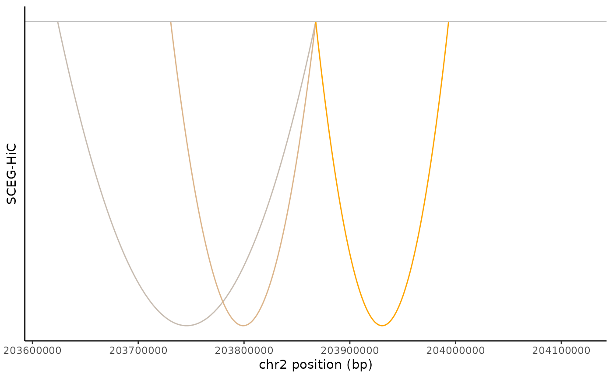

Display links between pairs of genomic elements within a given region of the genome.
Arguments
- links
The result of gene-peak pairs.
- geneanno
Either
NULLor a data.frame. The data.frame should be in a form compatible with the Gviz function.GeneRegionTrack-class(cannot have NA as column names).- gene
The focused genes.
- region
A genomic region to plot.
- lowcolor
Colours for low ends of the gradient.
- highcolor
Colours for high ends of the gradient.
- titlename
The title of linking genomic elements.
Value
Returns a ggplot object.
Examples
links <- data.frame(
gene = "CTLA4", peak = c("chr2_203623664_203623982", "chr2_203730093_203731243", "chr2_203992800_203993979"),
score = c(0.03623216, 0.14814205, 0.43240254)
)
library(GenomicRanges)
region <- GRanges(seqnames = Rle("chr2"), ranges = IRanges(start = 203617771, end = 204117772))
geneanno <- annotateTSS("Homo sapiens", "hg38")
colnames(geneanno) <- c("chr", "gene", "tss")
links <- LinksPlot(links, geneanno, gene = "CTLA4", region, lowcolor = "blue", highcolor = "orange", titlename = "SCEG-HiC")
links
